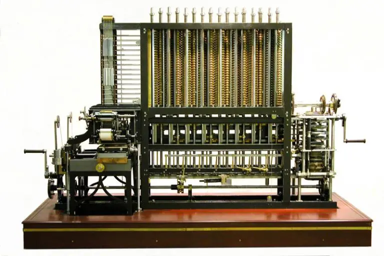

De forma geral, a programação é um processo de escrita, testes e manutenção de programas de computadores. Esses programas, por sua vez, são compostos por conjuntos de instruções determinados pelo programador que descrevem tarefas a serem realizadas pela máquina e atendem diversas finalidades. O advento da programação está diretamente ligado à história dos computadores. A primeira programadora foi uma mulher chamada Ada Lovelace, que escreveu um código para possibilitar a utilização da máquina analítica de Charles Babbage, uma máquina robusta, de difícil comunicação, considerada a precursora dos computadores eletrônicos atuais.
